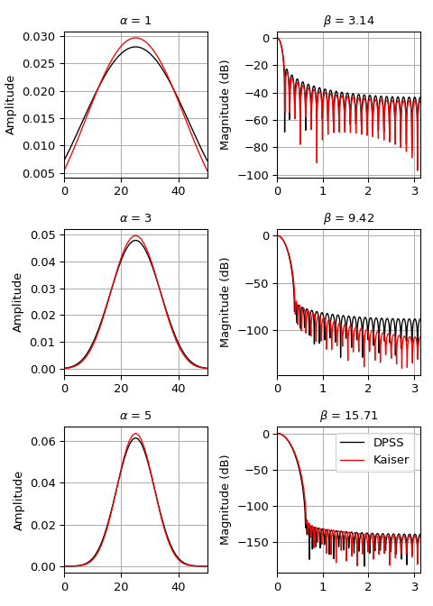
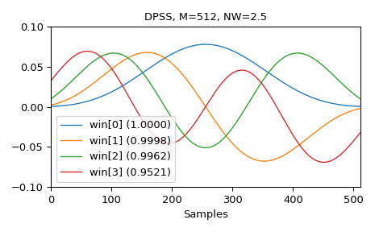
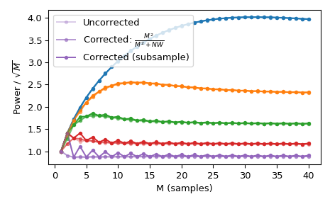

scipy.signal.windows.dpss¶
-
scipy.signal.windows.dpss(M, NW, Kmax=None, sym=True, norm=None, return_ratios=False)[source]¶ Compute the Discrete Prolate Spheroidal Sequences (DPSS).
DPSS (or Slepian sequences) are often used in multitaper power spectral density estimation (see [1]). The first window in the sequence can be used to maximize the energy concentration in the main lobe, and is also called the Slepian window.
- Parameters
- Mint
Window length.
- NWfloat
Standardized half bandwidth corresponding to
2*NW = BW/f0 = BW*N*dtwheredtis taken as 1.- Kmaxint | None, optional
Number of DPSS windows to return (orders
0throughKmax-1). If None (default), return only a single window of shape(M,)instead of an array of windows of shape(Kmax, M).- symbool, optional
When True (default), generates a symmetric window, for use in filter design. When False, generates a periodic window, for use in spectral analysis.
- norm{2, ‘approximate’, ‘subsample’} | None, optional
If ‘approximate’ or ‘subsample’, then the windows are normalized by the maximum, and a correction scale-factor for even-length windows is applied either using
M**2/(M**2+NW)(“approximate”) or a FFT-based subsample shift (“subsample”), see Notes for details. If None, then “approximate” is used whenKmax=Noneand 2 otherwise (which uses the l2 norm).- return_ratiosbool, optional
If True, also return the concentration ratios in addition to the windows.
- Returns
- vndarray, shape (Kmax, N) or (N,)
The DPSS windows. Will be 1D if Kmax is None.
- rndarray, shape (Kmax,) or float, optional
The concentration ratios for the windows. Only returned if return_ratios evaluates to True. Will be 0D if Kmax is None.
Notes
This computation uses the tridiagonal eigenvector formulation given in [2].
The default normalization for
Kmax=None, i.e. window-generation mode, simply using the l-infinity norm would create a window with two unity values, which creates slight normalization differences between even and odd orders. The approximate correction ofM**2/float(M**2+NW)for even sample numbers is used to counteract this effect (see Examples below).For very long signals (e.g., 1e6 elements), it can be useful to compute windows orders of magnitude shorter and use interpolation (e.g.,
scipy.interpolate.interp1d) to obtain tapers of length M, but this in general will not preserve orthogonality between the tapers.New in version 1.1.
References
- 1
Percival DB, Walden WT. Spectral Analysis for Physical Applications: Multitaper and Conventional Univariate Techniques. Cambridge University Press; 1993.
- 2
Slepian, D. Prolate spheroidal wave functions, Fourier analysis, and uncertainty V: The discrete case. Bell System Technical Journal, Volume 57 (1978), 1371430.
- 3
Kaiser, JF, Schafer RW. On the Use of the I0-Sinh Window for Spectrum Analysis. IEEE Transactions on Acoustics, Speech and Signal Processing. ASSP-28 (1): 105-107; 1980.
Examples
We can compare the window to
kaiser, which was invented as an alternative that was easier to calculate [3] (example adapted from here):>>> import numpy as np >>> import matplotlib.pyplot as plt >>> from scipy.signal import windows, freqz >>> N = 51 >>> fig, axes = plt.subplots(3, 2, figsize=(5, 7)) >>> for ai, alpha in enumerate((1, 3, 5)): ... win_dpss = windows.dpss(N, alpha) ... beta = alpha*np.pi ... win_kaiser = windows.kaiser(N, beta) ... for win, c in ((win_dpss, 'k'), (win_kaiser, 'r')): ... win /= win.sum() ... axes[ai, 0].plot(win, color=c, lw=1.) ... axes[ai, 0].set(xlim=[0, N-1], title=r'$\alpha$ = %s' % alpha, ... ylabel='Amplitude') ... w, h = freqz(win) ... axes[ai, 1].plot(w, 20 * np.log10(np.abs(h)), color=c, lw=1.) ... axes[ai, 1].set(xlim=[0, np.pi], ... title=r'$\beta$ = %0.2f' % beta, ... ylabel='Magnitude (dB)') >>> for ax in axes.ravel(): ... ax.grid(True) >>> axes[2, 1].legend(['DPSS', 'Kaiser']) >>> fig.tight_layout() >>> plt.show()
And here are examples of the first four windows, along with their concentration ratios:
>>> M = 512 >>> NW = 2.5 >>> win, eigvals = windows.dpss(M, NW, 4, return_ratios=True) >>> fig, ax = plt.subplots(1) >>> ax.plot(win.T, linewidth=1.) >>> ax.set(xlim=[0, M-1], ylim=[-0.1, 0.1], xlabel='Samples', ... title='DPSS, M=%d, NW=%0.1f' % (M, NW)) >>> ax.legend(['win[%d] (%0.4f)' % (ii, ratio) ... for ii, ratio in enumerate(eigvals)]) >>> fig.tight_layout() >>> plt.show()
Using a standard \(l_{\infty}\) norm would produce two unity values for even M, but only one unity value for odd M. This produces uneven window power that can be counteracted by the approximate correction
M**2/float(M**2+NW), which can be selected by usingnorm='approximate'(which is the same asnorm=NonewhenKmax=None, as is the case here). Alternatively, the slowernorm='subsample'can be used, which uses subsample shifting in the frequency domain (FFT) to compute the correction:>>> Ms = np.arange(1, 41) >>> factors = (50, 20, 10, 5, 2.0001) >>> energy = np.empty((3, len(Ms), len(factors))) >>> for mi, M in enumerate(Ms): ... for fi, factor in enumerate(factors): ... NW = M / float(factor) ... # Corrected using empirical approximation (default) ... win = windows.dpss(M, NW) ... energy[0, mi, fi] = np.sum(win ** 2) / np.sqrt(M) ... # Corrected using subsample shifting ... win = windows.dpss(M, NW, norm='subsample') ... energy[1, mi, fi] = np.sum(win ** 2) / np.sqrt(M) ... # Uncorrected (using l-infinity norm) ... win /= win.max() ... energy[2, mi, fi] = np.sum(win ** 2) / np.sqrt(M) >>> fig, ax = plt.subplots(1) >>> hs = ax.plot(Ms, energy[2], '-o', markersize=4, ... markeredgecolor='none') >>> leg = [hs[-1]] >>> for hi, hh in enumerate(hs): ... h1 = ax.plot(Ms, energy[0, :, hi], '-o', markersize=4, ... color=hh.get_color(), markeredgecolor='none', ... alpha=0.66) ... h2 = ax.plot(Ms, energy[1, :, hi], '-o', markersize=4, ... color=hh.get_color(), markeredgecolor='none', ... alpha=0.33) ... if hi == len(hs) - 1: ... leg.insert(0, h1[0]) ... leg.insert(0, h2[0]) >>> ax.set(xlabel='M (samples)', ylabel=r'Power / $\sqrt{M}$') >>> ax.legend(leg, ['Uncorrected', r'Corrected: $\frac{M^2}{M^2+NW}$', ... 'Corrected (subsample)']) >>> fig.tight_layout()
